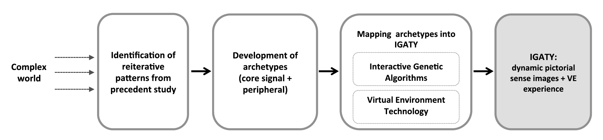
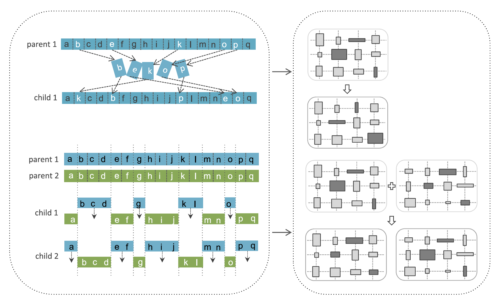
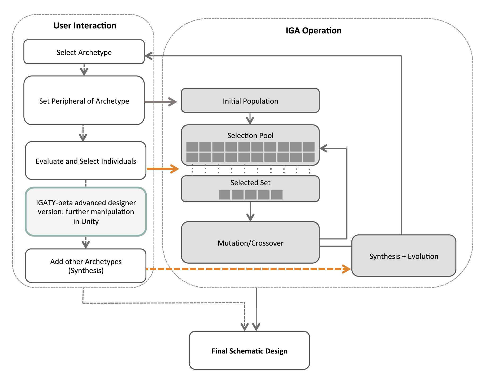

IGATY is a generative abstraction system designed to initiate the creative ideation process using the archetypes theory. The fundamental idea is that the theoretical foundation regarding interior archetypes aids the students/designers to build knowledge about the sources of ideas and archetypes. As seeds of ideas, the transformative archetypes operate to initiate the creative search. UC’s (University of Cincinnati’s) IGATY system is linked with Cornell’s intypes website to provide the foundational knowledge of each interior archetype. The fundamental structure of archetypes was redefined based on the dual structure of a core signal and a peripheral, and an interactive genetic algorithm (IGA) was implemented to visualize the transformative quality embedded in archetypes. The user interacts with the system by selecting, viewing, combining, transforming, and manipulating archetypes to generate ideas through the evolutionary process. The proposed system was designed to offer users the opportunity to view their exploration in a virtual environment (VE).
Figure 1. Procedure for IGATY system development (Suh, 2017)
WHAT IS HAPPENING BEHIND THE SCENE?
IGATY was designed based on an interactive genetic algorithm (IGA). A genetic algorithm (GA) is a heuristic computational method, and its development was inspired by a process found in natural evolution (Ramsden, 2009). GA was further developed into an IGA to include the user’s aesthetic judgment and design intention as evaluation criteria. An IGA has been used in graphic art, music, industrial design, editorial design, and face image generation (Takagi, 2001). A GA starts by generating initial populations whose production is based on defined rules. Multiple individual examples that share the same principles are produced through the mutation and crossover functions in the same way that a large number of populations is produced in each species in nature. The proposed system operates as an interactive partner and allows user interaction in the selection and evaluation process.
Figure 2. Examples of genetic operators used in this study (left) and possible application to genes in the Grid archetypes (right): chromosomal translocation mutation (or permutation encoding) _ the gene order is changed by translocation (top left); Uniformcrossover - depending on a mixing ratio, the operator exchanges some genes between two parent chromosomes (bottom left). (Diagrams of genetic operators based on Bäck, Fogel and Michalewicz's (2000) definitions).
Figure 3. User interaction flow diagram of the IGATY-beta system (Suh, 2017)
If you want to find more details, please click here. (LINK)
MORE RESOURCES:
Suh, J. (2017). An interactive generative abstraction system for the archetype-based pre-ideation process (IGATY).Design Science, 3.
Suh, J. (2019). Where to Start: Archetype-based Pre-ideation Exercises and the Enhancement of Creativity. International Journal of Design Education 13 (2), 59-77